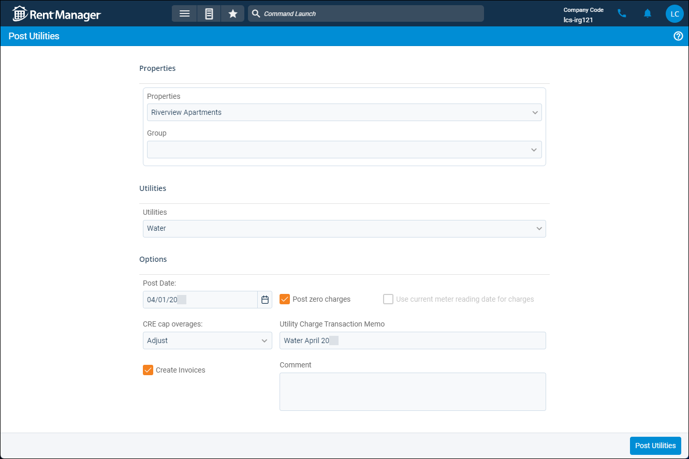

Source: https://rmxhelp.rentmanager.com/Topics/Express/Other/MU-Utilities-Post.htm
Post Utilities
On the Post Utilities page, you can apply consumption-based utility fees to tenant accounts. Before you can post utilities, you must enter meter readings.
More Information
If you roll back a utility posting flagged with exceptions, data about each exception, such as the Exception Reason, Status, and information on the Meter Exception Details pop-up is not deleted. For more information, refer to Roll Back a Posting.
Related Privileges
| Group | Privilege | Column |
|---|---|---|
| Utilities | Metered utilities | Enabled |
| Post utility information | Enabled |
For more information, refer to Control User Access.

Step 1: Select Properties and Utilities
To post utilities charges to your tenants, do the following:
-
Go to
 arrow_forward Services arrow_forward Metered Utilities arrow_forward Post Utilities.
arrow_forward Services arrow_forward Metered Utilities arrow_forward Post Utilities. -
In the Properties section, select the Properties whose utility charges you are posting, or select a property Group.
-
In the Utilities section, select the utilities to post. Only the utilities associated with the selected properties display.
-
Depending on settings established in the High/Low Settings pop-up, banners may display at the top of the page requiring you to take additional action before posting. For more information, refer to Manage Metered Utilities High/Low Settings.
Banner Action Description Review Meter Exceptions
Click to open the Post Utilities: Review Meter Exceptions page. From this page, you can select an Exception Reason for any reading that has a consumption amount that is flagged as being outside the expected amount. For more information, refer to Meter Exceptions (Page).
This banner displays only if, on the High/Low Settings pop-up's Exception Reasons tab, this utility type has the Posting Restriction setting Warn before posting exceptions without a reason or Require reasons on all exceptions before posting readings and utility charges. If the latter option is selected, you cannot post utilities until all exceptions on the Post Utilities: Review Meter Exceptions page have an Exception Reason.
View Meter Readings Statuses
Click to open the Meter Readings Statuses page. From this page, you can determine the current status of exceptions within the approval workflow. For example, some exceptions may have the Needs Approval status, meaning they cannot be posted until a workflow's designated approver confirms they are ready to post. For more information, refer to Meter Readings Statuses (Page).
This banner displays only if, on the High/Low Settings pop-up's Exception Reasons tab, this utility type has the Posting Restriction setting Require reasons on all exceptions before posting readings and utility charges, and on the Approval Workflows tab, an enabled approval workflow includes the selected property. You cannot post utilities until all exceptions in the reading batch are approved in the workflow.
Step 2: Post Utilities
Once you select the properties and utilities Rent Manager reviews the meter readings for, set up how the charges calculate and are posted to the tenants.
-
In the Options section, enter the following additional information based on how you want to changes to display:
Option Description Post Date
The date that the charge posts to the selected tenant accounts.
CRE cap overages
For tenants at properties with a Property Type of Commercial, the calculation method that Rent Manager uses if the utility charge exceeds the commercial recoverable expenses (CRE) cap amount established on the tenant's lease.
Adjust
Adjust the charge amount to not exceed the common area maintenance (CAM) cap.
Allow
Allow the charge to exceed the CAM cap.
Skip
Skip the charge if the amount exceeds the CAM cap.
Create Invoices
Generates invoices for the utility charge(s).
Post zero charges
Posts utilities that do not have current consumption and calculated charges. The zero amount due is displayed on the tenant statement, even if that tenant is not a consumer of the utility.
Utility Charge Transaction Memo
Any additional information to describe this charge that displays in the description of this transaction.
Comment
Any additional information to describe this charge displays on the associated invoice.
Use current meter reading date for charges
Use the date of the most recent meter reading instead of the date in the Post Date field.
-
Click Post Utilities.
The utility charges are posted for the selected properties and tenants.More Information
If the setting Warn before posting exceptions without a reason is selected for this utility type, and if you have not added Exception Reason for all meter exceptions, the Confirm Posting pop-up displays. For more information refer to Meter Exceptions (Page).